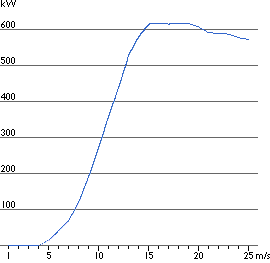

The Power Curve of a Wind Turbine

The
power curve of a wind turbine is a graph that indicates how large
the electrical power output will be for the turbine at different
wind speeds.
 The graph shows a power curve for a typical
Danish 600 kW wind turbine.
The graph shows a power curve for a typical
Danish 600 kW wind turbine.
 Power curves are found by field measurements,
where an anemometer is placed on a
mast reasonably close to the wind turbine (not on the turbine
itself or too close to it, since the turbine rotor may create
turbulence, and make wind speed measurement unreliable).
Power curves are found by field measurements,
where an anemometer is placed on a
mast reasonably close to the wind turbine (not on the turbine
itself or too close to it, since the turbine rotor may create
turbulence, and make wind speed measurement unreliable).
 If the wind speed is not fluctuating too
rapidly, then one may use the wind speed measurements from the
anemometer and read the electrical power output from the wind
turbine and plot the two values together in a graph like the
one to the left.
If the wind speed is not fluctuating too
rapidly, then one may use the wind speed measurements from the
anemometer and read the electrical power output from the wind
turbine and plot the two values together in a graph like the
one to the left.
Uncertainty
in Measurement of Power Curves
In reality, one will see a swarm of points spread around the
blue line, and not the neat curve in the graph.
 The reason is that in practice the wind speed
always fluctuates, and one cannot measure exactly the column
of wind that passes through the rotor of the turbine.
The reason is that in practice the wind speed
always fluctuates, and one cannot measure exactly the column
of wind that passes through the rotor of the turbine.
 (It is not a workable solution just to place
an anemometer in front of the turbine, since the turbine will
also cast a "wind shadow" and brake the wind in front
of itself).
(It is not a workable solution just to place
an anemometer in front of the turbine, since the turbine will
also cast a "wind shadow" and brake the wind in front
of itself).
 In practice, therefore, one has to take an
average of the different measurements for each wind speed, and
plot the graph through these averages.
In practice, therefore, one has to take an
average of the different measurements for each wind speed, and
plot the graph through these averages.
 Furthermore, it is difficult to make exact
measurements of the wind speed itself. If one has a 3 per cent
error in wind speed measurement, then the energy
in the wind may be 9 per cent higher or lower (remember that
the energy content varies with the third power of the wind speed).
Furthermore, it is difficult to make exact
measurements of the wind speed itself. If one has a 3 per cent
error in wind speed measurement, then the energy
in the wind may be 9 per cent higher or lower (remember that
the energy content varies with the third power of the wind speed).
 Consequently, there may be errors up to plus
or minus 10 per cent even in certified power curves.
Consequently, there may be errors up to plus
or minus 10 per cent even in certified power curves.
Verifying
Power Curves
Power curves are based on measurements in areas with low turbulence intensity, and with the wind coming
directly towards the front of the turbine. Local turbulence and
complex terrain (e.g. turbines placed on a rugged slope) may
mean that wind gusts hit the rotor from varying directions. It
may therefore be difficult to reproduce the power curve exactly
in any given location.
Pitfalls
in
Using Power Curves
A power curve does not tell you how much power a wind
turbine will produce at a certain average wind speed. You would
not even be close, if you used that method!
 Remember, that the energy content of the
wind varies very strongly with the wind speed, as we saw in the
section on the energy in the wind.
So, it matters a lot how that average came about, i.e. if winds
vary a lot, or if the wind blows at a relatively constant speed.
Remember, that the energy content of the
wind varies very strongly with the wind speed, as we saw in the
section on the energy in the wind.
So, it matters a lot how that average came about, i.e. if winds
vary a lot, or if the wind blows at a relatively constant speed.
 Also, you may remember from the example in
the section on the power density function,
that most of the wind energy is available at wind speeds which
are twice the most common wind speed at the site.
Also, you may remember from the example in
the section on the power density function,
that most of the wind energy is available at wind speeds which
are twice the most common wind speed at the site.
 Finally, we need to account for the fact
that the turbine may not be running at standard air pressure
and temperature, and consequently make corrections for changes
in the density of air.
Finally, we need to account for the fact
that the turbine may not be running at standard air pressure
and temperature, and consequently make corrections for changes
in the density of air.

| Back
| Home | Forward
|
© Copyright 2000 Soren Krohn.
All rights reserved.
Updated 6 September 2000
http://www.windpower.org/tour/wres/pwr.htm